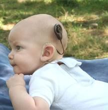

Home - Contacto - Implantes cocleares - Funcionamiento del programa - Marcas y represenantes en Uruguay
El Implante Coclear es un dispositivo electrónico de alta tecnología, un transductor que transforma las señales acústicas en señales eléctricas que estimulan el nervio auditivo.
El oído humano tiene la misión captar, codificar y transferir al cerebro la información sonora que emana de la naturaleza. El sistema auditivo está formado por la unión de tres partes diferentes especializadas: el oído externo, el oído medio y el oído interno. Es en este último donde se coloca el implante coclear.
El implante coclear, lo podríamos llamar un “oído artificial”, ya que sustituye la función del oído interno dañado. Al contrario que las prótesis auditivas, que amplifican el sonido, los implantes cocleares realizan el trabajo de las partes dañadas del oído interno (cóclea) para proporcionar señales sonoras al cerebro.
Estas señales eléctricas son procesadas a través de las diferentes partes de que consta el Implante Coclear, las cuales se dividen en Externas e Internas:
Externas: Micrófono (1): Recoge los sonidos, que pasan al Procesador. Procesador (3): Selecciona y codifica los sonidos más útiles para la comprensión del Lenguaje. Transmisor (4): Envía los sonidos codificados al Receptor (5).
Internas: Receptor-Estimulador (5): Se implanta en el hueso mastoides, detrás del pabellón auricular. Envía las señales eléctricas a los electrodos. Electrodos (6): Se introducen en el interior de la cóclea (8) (oído interno) y estimulan las células nerviosas que aún funcionan. Estos estímulos pasan a través del nervio auditivo (7) al cerebro, que los reconoce como sonidos y se tiene -entonces- la sensación de «oír».
Ambas partes (externa e interna) se ponen en contacto por un cable (2) y un imán (4).